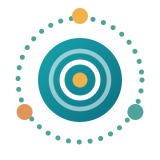

<!doctype html><html lang="ar" dir="rtl"><head><meta charset="utf-8"><meta name="viewport" content="width=device-width,initial-scale=1">
<title>أثر – قياس أثر العملية التعليمية · متوسطة لبيد بن ربيعة</title><meta name="description" content="أثر: قياس أثر العملية التعليمية على المتعلم والمعلم وولي الأمر والقيادة المدرسية والجهة المشرفة، أحد أنظمة النواة الرقمية في متوسطة لبيد بن ربيعة."><link rel="preconnect" href="https://fonts.googleapis.com"><link rel="preconnect" href="https://fonts.gstatic.com" crossorigin>
<link href="https://fonts.googleapis.com/css2?family=Tajawal:wght@400;500;700;800&display=swap" rel="stylesheet"><link rel="icon" href="favicon.svg" type="image/svg+xml"><link rel="stylesheet" href="assets/core.css"><link rel="stylesheet" href="assets/athar.css"><link rel="stylesheet" href="assets/landing.css"></head>
<body class="lh"><div id="hdr"></div><main id="app"><div class="empty"><span class="spin"></span></div></main><div id="ftr"></div>
<script src="https://cdn.jsdelivr.net/npm/@supabase/supabase-js@2.45.4/dist/umd/supabase.min.js"></script><script src="assets/config.js"></script><script src="assets/ub.js"></script><script src="assets/role-switch.js"></script><script src="assets/unified-kit.js"></script><script src="assets/app.js"></script>
<script>
(async () => { await A.loadMe(); await A.chrome("index.html");
const me = A.state.me, ico = A.ico, app = A.$("#app"); app.className = "";
const II = { cap: '<path d="M2 9l10-5 10 5-10 5z"/><path d="M6 11.5V16c0 1.5 2.7 3 6 3s6-1.5 6-3v-4.5M22 9v6"/>', family: '<circle cx="8" cy="7" r="3"/><circle cx="17" cy="9" r="2.4"/><path d="M2.5 20c.6-3.4 2.9-5.2 5.5-5.2s4.9 1.8 5.5 5.2M14.5 20c.4-2.4 1.9-3.8 3.7-3.8s3.3 1.4 3.7 3.8"/>', user: '<circle cx="12" cy="8" r="4"/><path d="M4 21a8 8 0 0 1 16 0"/>', school: '<path d="M3 10l9-6 9 6M5 10v10M19 10v10M2 20h20M9 20v-6h6v6"/>', shield: '<path d="M12 3l8 3v6c0 5-3.5 8-8 9-4.5-1-8-4-8-9V6z"/><path d="M9 12l2 2 4-4"/>', building: '<path d="M4 21V5l8-2v18M12 8h8v13M2 21h20M7 8h2M7 12h2M7 16h2M15 12h2M15 16h2"/>', star: '<path d="M12 2c1 6 4 9 10 10-6 1-9 4-10 10-1-6-4-9-10-10 6-1 9-4 10-10z"/>', target: '<circle cx="12" cy="12" r="9"/><circle cx="12" cy="12" r="5"/><circle cx="12" cy="12" r="1"/>', chart: '<path d="M4 20V4M4 20h16"/><rect x="7" y="11" width="3" height="6" rx="1"/><rect x="12" y="7" width="3" height="10" rx="1"/><rect x="17" y="13" width="3" height="4" rx="1"/>', rep: '<path d="M6 3h9l4 4v14H6z"/><path d="M9 13h7M9 17h7"/>', bolt: '<path d="M13 2L4 14h7l-1 8 9-12h-7z"/>', check: '<path d="M4 12l5 5L20 6"/>', users: '<circle cx="9" cy="8" r="3.5"/><path d="M2.5 20c.8-3.5 3.4-5.5 6.5-5.5s5.7 2 6.5 5.5"/><path d="M16 4.5a3.5 3.5 0 0 1 0 7M18 14.8c1.9.7 3.1 2.4 3.5 5.2"/>', lock: '<rect x="5" y="11" width="14" height="9" rx="2"/><path d="M8 11V8a4 4 0 018 0v3"/>', eye: '<path d="M2 12s4-7 10-7 10 7 10 7-4 7-10 7S2 12 2 12z"/><circle cx="12" cy="12" r="3"/>', hourglass: '<path d="M6 3h12M6 21h12M7 3c0 5 5 6 5 9s-5 4-5 9M17 3c0 5-5 6-5 9s5 4 5 9"/>', arrow: '<path d="M15 6l-6 6 6 6"/>', compass: '<circle cx="12" cy="12" r="9"/><path d="M15.5 8.5l-2 5-5 2 2-5z"/>', link: '<path d="M10 14a4 4 0 0 0 5.7 0l3-3a4 4 0 0 0-5.7-5.7l-1 1"/><path d="M14 10a4 4 0 0 0-5.7 0l-3 3a4 4 0 0 0 5.7 5.7l1-1"/>' };
const I = (n) => `<svg class="ico" viewBox="0 0 24 24" aria-hidden="true">${II[n] || ""}</svg>`;
const bar = (i, t, w, c, d) => `<div class="qbr"><i>${I(i)}</i><div><small>${t}</small><u style="--w:${w}%;--c:${c};--d:${d}s"></u></div></div>`;
const tk = (i, n, t, p) => `<div class="tk rv" tabindex="0" role="button" aria-label="${t}"><div class="tk-top">${I(i)}<b>${n}</b></div><div class="tk-perf"></div><div class="tk-body"><h3>${t}</h3><p>${p}</p></div><div class="tk-bar"></div><span class="tk-st">يُقاس ✓</span></div>`;
const id = (i, s, t, p, f) => `<div class="id rv"><span class="lan"></span><div class="av">${I(i)}</div><small>${s}</small><h3>${t}</h3><p>${p}</p><div class="ft">${f}</div></div>`;
const pc = (i, t, p) => `<div class="mr-pc rv"><i>${I(i)}</i><b>${t}</b><p>${p}</p></div>`;
const gl = (n, i, t, p) => `<div class="mr-gl rv"><span class="mr-gn">${n}</span><i>${I(i)}</i><div><b>${t}</b><p>${p}</p></div></div>`;
app.innerHTML = `<section class="hero3 hl qhero"><div class="h3g"><div class="h3t"><span class="h3pill">${I("school")}أحد أنظمة النواة الرقمية · متوسطة لبيد بن ربيعة</span>
<h1><em>أثر</em></h1><p class="h3sub">نعرف ما تغيّر فعلاً</p>
<p class="h3p">قياس أثر العملية التعليمية على المتعلم والمعلم وولي الأمر والقيادة المدرسية والجهة المشرفة، بأسئلة قصيرة تتحول إلى دراسة وتوصيات تُبنى عليها قرارات التطوير.</p>
<div class="h3act"><a class="btn" href="${me ? "dashboard.html" : "login.html"}">${me ? "لوحة التحكم" : "الدخول بحساب النواة"}</a><a class="btn ghost" href="about.html">تعرّف على أثر</a></div></div>
<div class="qi" aria-hidden="true"><div class="qwin"><div class="dots"><i></i><i></i><i></i></div><div class="qbars">${bar("cap", "المتعلم", 86, "#18a4ab", 0)}${bar("user", "المعلم", 72, "#f0b34a", .5)}${bar("family", "ولي الأمر", 64, "#27ae6f", 1)}${bar("school", "القيادة المدرسية", 78, "#3b82c4", 1.5)}${bar("shield", "الجهة المشرفة", 58, "#8a6fd1", 2)}</div></div>
<span class="qchip a">${I("users")}خمسة أصوات</span><span class="qchip b">${I("rep")}دراسة وتوصيات</span>
<div class="qlogo"><span class="spk"></span></div></div></div></section>
<section class="qmc rv"><div class="qmc-in"><div class="qmc-l"><span class="spk"></span></div><div class="qmc-t"><h2>أثر لا يعدّ الأنشطة، بل يسأل <em>ماذا تغيّر فعلاً</em> عند من يعيشها.</h2><p>كل رأي يُجمَّع بسرية، ويتحول إلى نتائج ونقاط قوة وفرص تحسين وتوصيات.</p></div></div></section>
<section class="qs" id="svc"><div class="hh rv"><div><small>ما نقيسه</small><h2>أين يظهر أثر العملية التعليمية؟</h2></div></div><div class="tk-g">${tk("school", "01", "العملية التعليمية", "جودة التعلم داخل الصف، وأساليب التدريس والتقويم والتغذية الراجعة، وما يصل فعلاً إلى المتعلم.")}${tk("building", "02", "البيئة المدرسية", "الأمان والانتماء والعلاقات والانضباط والمرافق، وكل ما يصنع مناخاً يساعد على التعلم.")}${tk("star", "03", "القيادة التعليمية", "وضوح الرؤية والتواصل ودعم المعلمين ومتابعة التنفيذ، وأثر القرارات على الميدان.")}${tk("rep", "04", "دراسة وتوصيات", "نتائج بالمتوسطات ونقاط القوة وفرص التحسين، وتوصيات مرتبة بالأولوية، ثم إعادة القياس.")}</div></section>
<section class="qs" id="aud"><div class="hh rv"><div><small>مَن نسمع؟</small><h2>خمسة أصوات تصنع الصورة كاملة</h2><p class="hh-d">كل فئة ترى زاوية لا تراها الأخرى، فيُسأل كلٌّ بما يخصه.</p></div></div><div class="id-g">${id("cap", "الصوت الأول", "المتعلم", "كيف يعيش تعلّمه ومدرسته؟", "يعبّئ برابط مباشر")}${id("user", "الصوت الثاني", "المعلم", "ما أثر البيئة والقيادة على ممارسته؟", "يعبّئ بحساب النواة")}${id("family", "الصوت الثالث", "ولي الأمر", "ماذا يرى من أثر المدرسة في ابنه؟", "يعبّئ برابط مباشر")}${id("school", "الصوت الرابع", "القيادة المدرسية", "كيف يُرى أثر قراراتها وخططها؟", "تعبّئ بحساب النواة")}${id("shield", "الصوت الخامس", "الجهة المشرفة", "كيف تقوّم واقع المدرسة بمعطيات؟", "تعبّئ برابط مباشر")}</div></section>
<section class="qs" id="prn"><div class="hh rv"><div><small>مبادئنا</small><h2>أربعة مبادئ تحكم قياس الأثر</h2></div></div><div class="mr-prn">${pc("lock", "إجابات مجمّعة", "لا تُربط الإجابة بصاحبها، فيجيب الناس بصدق.")}${pc("target", "أثر لا انطباع", "نسأل عن التغير الفعلي لا عن مجرد الرضا العام.")}${pc("shield", "ليس تقويماً للأفراد", "هدفه تحسين العملية لا الحكم على أداء أحد.")}${pc("check", "قراءة عادلة", "لا تُعرض النتائج قبل عدد كافٍ من المشاركين.")}</div></section>
<section class="qs" id="goals"><div class="hh rv"><div><small>لماذا نقيس الأثر؟</small><h2>أهداف قياس الأثر ومبرراته</h2><p class="hh-d">ما الذي يضيفه للمنظومة التعليمية، ولماذا يستحق الاعتماد.</p></div><a href="about.html" class="hl-a">تعرّف على النظام ${I("arrow")}</a></div><div class="mr-goals">${gl("01", "target", "معرفة ما تحقق فعلاً", "التمييز بين ما نُفّذ وما أحدث فرقاً حقيقياً في التعلم والبيئة والقيادة.")}${gl("02", "users", "إسماع كل الأطراف", "يشارك المتعلم والمعلم وولي الأمر والقيادة والجهة المشرفة في الحكم على الأثر.")}${gl("03", "compass", "كشف مبكر للفجوات", "اكتشاف مواضع الضعف وهي قابلة للمعالجة، لا بعد استقرارها.")}${gl("04", "bolt", "قرار مبني على دليل", "توجيه الوقت والجهد والموارد إلى ما يثبت أثره.")}${gl("05", "star", "تعزيز ما ينجح", "إبراز الممارسات المؤثرة لتُعمَّم وتُبنى عليها الخطط.")}${gl("06", "hourglass", "تحسّن متواصل", "إعادة القياس بجولات جديدة لمعرفة هل اقترب الأثر من المستهدف.")}</div></section>
<div class="ctab rv"><h2>${me ? "شارك في قياس الأثر" : "كن جزءاً من قياس الأثر"}</h2><p>${me ? "استباناتك المطلوبة ودراساتك المعتمدة في مكتبك الإلكتروني." : "للمنسوبين: الدخول بحساب النواة الرقمية نفسه."}</p><a class="btn gold" href="${me ? "dashboard.html" : "login.html"}">${me ? "فتح لوحة التحكم" : "تسجيل الدخول"}</a></div>`;
document.querySelectorAll(".tk").forEach(t => { t.onclick = () => t.classList.toggle("on"); t.onkeydown = e => { if (e.key === "Enter" || e.key === " ") { e.preventDefault(); t.classList.toggle("on"); } }; });
const rv = document.querySelectorAll(".rv");
if ("IntersectionObserver" in window) { const o = new IntersectionObserver(es => es.forEach(e => { if (e.isIntersecting) { e.target.classList.add("in"); o.unobserve(e.target); } }), { threshold: .12 }); rv.forEach(x => o.observe(x)); } else rv.forEach(x => x.classList.add("in"));
})();
</script><script src="https://i3zalmadeni.github.io/digital-core/assets/report-kit.js?v=20261120a"></script><script>window.ReportKit&&ReportKit.install({system:"athar",systemName:"أثر",root:["#app","#main","main"]});</script></body></html>
